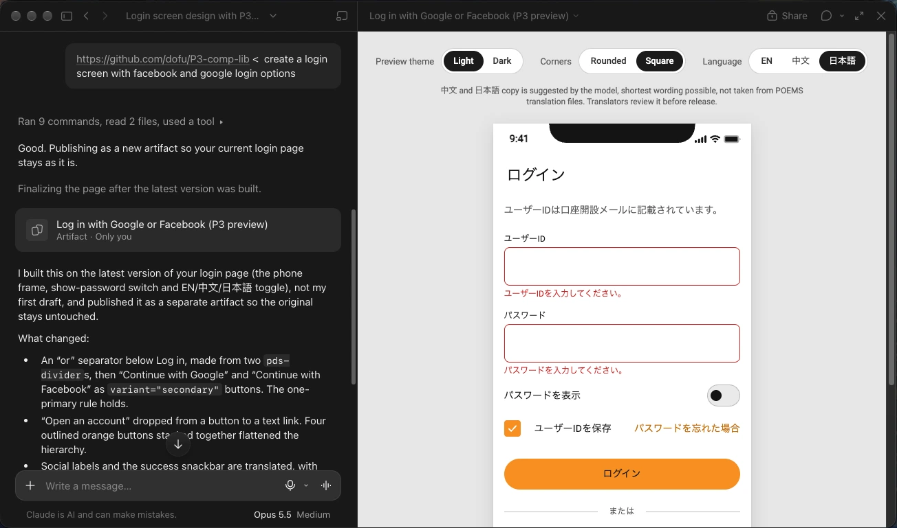

A design system you can prompt
A library of web components that business analysts can point Claude at, so the screens they prompt look like our trading app. How I built it, what the first testers broke, and the rules that came out of it.
- Library
Before: Figma documentation onlyNow: 25components, coded and checked, from 20 documented boards. - Rules
Before: NoneNow: 7 rulesin the README that every generated screen has to follow. - Finding
Assumed: Our parts, a consistent screenFound: Not enoughA BA's screen mixed money formats. So did our own design files: six in use.
Claude draws fast, and in its own taste
Business analysts (BAs) and product managers often need to show an idea as a screen. Until now a BA either waited weeks for the UX team, or worked out the flow alone for their URS, the requirements document. Claude can draw a screen in seconds, but it invents its own buttons, colours and spacing, and invents them differently every time.
I wanted a BA to take an early idea to a screen without waiting for UX team time. The UX team should not be the blocker at the ideation phase, and the screen had to look like ours. The way out was to stop describing the design system to Claude and hand it the real components.
One link, no setup
- It has to work from a link pasted into a prompt. Nothing to install.
- Most BAs have no Figma seat, so Figma cannot be the source they read from.
- No build step and no server, because I host it myself and nobody maintains a pipeline.
- Public repository: no names, no internal paths, nothing a stranger should not see.
- The design documentation lived in Figma only. Anything Claude needed had to be turned into plain text first.
Four ways to give Claude the UI, one that worked
I compared a PDF export, Storybook, Figma and GitHub on what Claude can do with each. GitHub won because every file is plain text at a URL.
| Question | PDF export | Storybook | Figma | GitHub |
|---|---|---|---|---|
| Can Claude read it from a prompt? | Yes, as a description of the UI. | No. The JavaScript build hides the stories. | Yes, about 20 calls a month on Starter. | Yes. Plain text at a URL. |
| Can it use the UI as it is? | No. It redraws from pictures. | No. It gets screenshots, not components. | No. It redraws each element. | Yes. It imports the files and writes the tags. |
| Is it easy to update, and current for the team? | No. Stale once exported. | Yes, after a rebuild and redeploy. | Yes. Edit the file and the team sees it. | Yes. Commit and everyone gets it, with a diff. |
| What does it take to set up? | An export. | A coded library, a build and hosting. | A seat and the connector, per person. | Push the folder. |
| Can someone use it without an account? | Yes. Anyone with the file. | Yes, if it is public. | No. It needs a Figma seat. | Yes. A public repo opens from the link. |
| Can I add my own rules and logic? | Text only, no logic. | Yes, but Claude cannot read them. | Notes only, no logic. | Yes. README, CLAUDE.md and component logic. |
How I built and tested it
- Source
- 20 component boards in our Figma design system, rewritten so a machine could read them. Tokens read from the design file.
- Build
- Plain JavaScript web components, one tokens file, one manifest and one usage guide per component. AI agents built them in parallel, one board each, and I reviewed the output.
- Testing
- BAs and colleagues ran real prompts with the repository link as the only instruction. I read what came back.
From documentation to a library people prompt
Seven steps, from a Figma file to a demo. The README rules came from the loop in the middle: the screens testers sent back.
- Once
- Repeated with each tester
- Export the Figma components
- Build
- Test
- Push to Git
- Invite testers
- Revise
- Demo to the team
A render caught what reading missed. The first screenshot of the badge showed an oval where a 6px dot belonged. I had read the code and not seen it.
A script broke all 25 files. A cleanup pass to remove names corrupted every component, and there was no backup. I stopped, said so, and rebuilt each file by hand. Now I snapshot a file before any script edits it.
What I chose, and what I gave up
Chose. GitHub over a PDF, Storybook or Figma. Plain JavaScript, no build. Rules in the README, because a BA pastes only one link. A scope line under every preview: a high-fidelity concept, not a requirements document and not a build for developers.
Kept out. A text size toggle, until we have text scaling rules. A "show it as a live page" instruction in the prompt: that is the user's call.
Gave up. The exact font. Many laptops do not have it, so the preview falls back and says so.
How I check what comes back
- A browser harness. It opens every component, sets every attribute and checks the children survive. 50 checks passed at the last run. It stays on my machine.
- Testers with only the link. I read each screen against the rules, and against the design file for anything the rules do not cover.
- A note under the screen. Claude writes one only where it had to improvise: a stand-in for a missing component, or something hand-built. No note means it used the library throughout.
- A scan before every push. It looks for names, email addresses and local paths.
What I assumed, and what held
Use https://github.com/dofu/p3-comp-lib as the only UI library and follow its README rules. Build: [describe the screen].
One prompt. This is the whole of what a BA pastes.
A link in the prompt is enough.
Not across Claude organisations. A link from another team opened to Page not found.
Our components give a consistent screen.
Same prompt, two runs: a button once, a link once. Every part was ours both times.
A README can carry the rules.
A tester's Claude cited rule 7 by number when it listed what it had substituted.
The most telling result came last. A BA vibe coded a home screen with the library. Net assets read "$313,003.32", and the profit and loss on the same card read "301,561.45", with no currency.
I scanned our design files and found six money formats in use, with no document saying which is right. The library did not create the inconsistency. It made it visible, one prompt at a time.
What I'd change, and the rule I took
The first rules were written alone, before any BA had tried the library. The testers started changing them the same day.
A library can only enforce what our documentation has decided. Money format and a minimum button width are still undecided, so a rule for either would be my guess.
The rule I took: when a screen comes back wrong, write the fix where the AI reads it, then check that the design file says the same thing. If it does not, fix the design file first.
The library is public: github.com/dofu/p3-comp-lib.